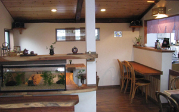

メニュー
About Cafe - このカフェについて
Blueberry Cafe 和 オープンのきっかけ - オーナーのごあいさつ
ブルーベリーに出会い、感動しました。
夫婦共々栽培しようと決意し、10年栽培をしてきました。
北は北海道から南は九州までブルーベリー産地を見学し、自分の土地に合った栽培に気がつきました。
ここは富士山と箱根山に囲まれた火山灰性土壌の土地です。
まだまだ、悪戦苦闘して栽培していますが、ブルーベリーの素晴らしさを知って頂くチャンスと思い
摘み取り園と休憩所を兼ねたブルーベリーＣａｆｅを開店しました。
Cafeの紹介 - こだわりの空間
木の香りとくつろげる空間を提供します。
上質な落ち着きくつろげる空間を提供したいとのコンセプトです。
大工さんと一緒に３ケ月、オーナーのみで２ケ月の労力を費やし完成しました。
また、開店にあたり色々な人が協力してくれてました。
この場を借りて御礼申し上げます。
特徴は木の香りに包まれた欅（けやき）のテーブルで皆様を歓迎します。
欅は銘木収集家より譲り受けた特別な島杢（しまの）模様で、
それを大工さんと一緒に手作りしました。
トイレはバリアフリーとなっており、車椅子の方でも安心してご使用になれます。
一番力を入れて手作りをしましたので、是非使用してみてください。
また、店内にはオーナーの知人が制作した小物やバッグも販売しています。
カフェだけでなく、そちらも是非ご覧になってみてください。

季節限定のブルーベリー摘み取り園 - 約１ヶ月限定
当店のブルーベリーの収穫時期は７月～８月頃です。
その時期にお越しいただきますと、摘み取り園にてブルーベリーを摘み取ることが可能です。
同時期には摘みたてのブルーベリーの配送も行っています。